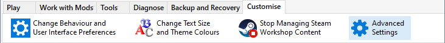
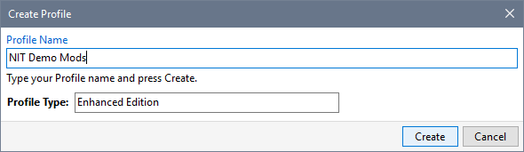
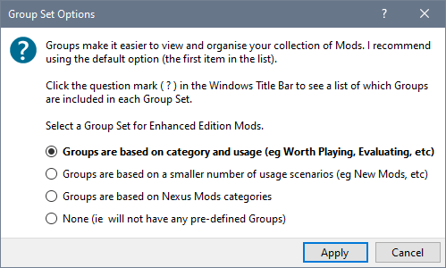
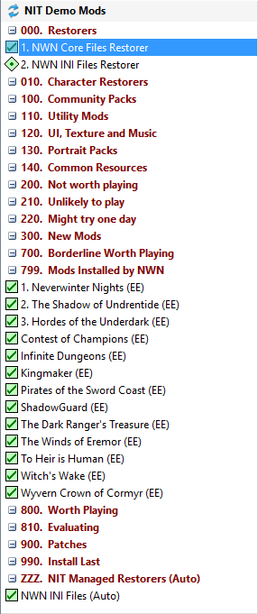
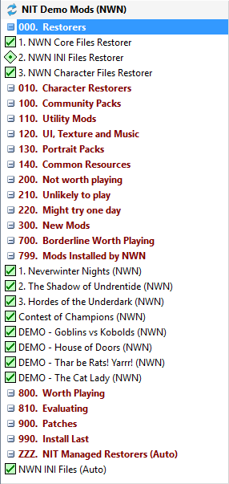

Use the Profiles page in Advanced Settings to define new Profiles.

- Press Insert or click an
 Edit Icon or Right-Click an item and click New Profile.
Edit Icon or Right-Click an item and click New Profile.

- Type in the name of your new Profile. If you have both Neverwinter Nights and the Enhanced Edition installed, you can select which type of installation to use with your Profile. You cannot change the Profile Type after the Profile has been created. Click Create when you are ready to add your new Profile.

- You can change which Installation or User Files folder is used with this profile by selecting NWN Folder or Create NWN Folder from the menu.
Note:
Steam ignores the User Files folder you specified on the Locations page in Advanced Settings and always uses the default folder (Documents\Neverwinter Nights). Enable "Use NIT to manage Steam's Workshop Content" to use a different User Files folder.
- The Profile is only registered when you click the Save button (ie clicking the Cancel button discards any Profiles you defined as well as any other changes to Settings).
- Select Load Profile from the File menu to initialise the new Profile and specify your Group Set preference.

- The Tool asks if you want to create Restorers for your new Profile. If you answer Yes, you may see some flickering as the different Restorers are created - this is normal.

- Your new Profile is now ready to use.


Related Topics
Define new Profiles
Create a Neverwinter Nights folder
Specify a Neverwinter Nights folder
Rename a Profile
Remove a Profile
Glossary